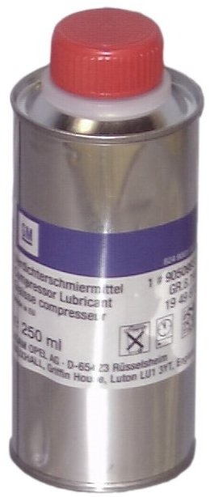

90 509 933 Compressor Oil
90 509 933 Compressor Oil

Specifications
Reniso PAG - K9700201. 250 ml can.
Range of application
AC-compressor oil for R134a.
Packaging
1
Transport
No restrictions apply when transporting this product.
Directives
Do not empty in drains. Avoid contact with skin and eyes.